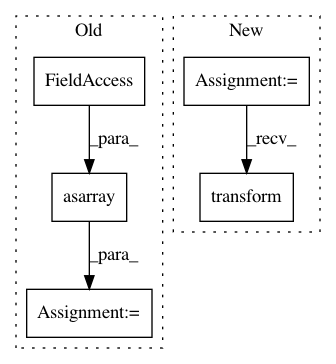

10137f3f3e982a68fdac3a0253bf0229f0f06b0b,doc/examples/syn_registration_3d.py,,,#,27
Before Change
import dipy.align.vector_fields as vfu
transform = np.linalg.inv(moving_affine).dot(pre_align.dot(static_affine))
resampled = vfu.warp_3d_affine(moving.astype(np.float32),
np.asarray(static.shape, dtype=np.int32),
transform)
resampled = np.asarray(resampled)
plot the overlapped middle slices of the volumes
After Change
from dipy.align.imaffine import AffineMap
affine_map = AffineMap(pre_align,
static.shape, static_affine,
moving.shape, moving_affine)
resampled = affine_map.transform(moving)
plot the overlapped middle slices of the volumes
In pattern: SUPERPATTERN
Frequency: 3
Non-data size: 5
Instances
Project Name: nipy/dipy
Commit Name: 10137f3f3e982a68fdac3a0253bf0229f0f06b0b
Time: 2015-08-14
Author: jomaroceguedag@gmail.com
File Name: doc/examples/syn_registration_3d.py
Class Name:
Method Name:
Project Name: nilearn/nilearn
Commit Name: 958eeaaa462b1c7f8f98dea8ba2cec5cf6ab32d8
Time: 2015-05-13
Author: abraham.alexandre@gmail.com
File Name: nilearn/input_data/tests/test_nifti_spheres_masker.py
Class Name:
Method Name: test_sphere_extraction
Project Name: nilearn/nilearn
Commit Name: 4b50eb041ce3a84e9ffdc37232a99f91133dbd2c
Time: 2015-05-07
Author: abraham.alexandre@gmail.com
File Name: nilearn/input_data/tests/test_nifti_spheres_masker.py
Class Name:
Method Name: test_sphere_extraction